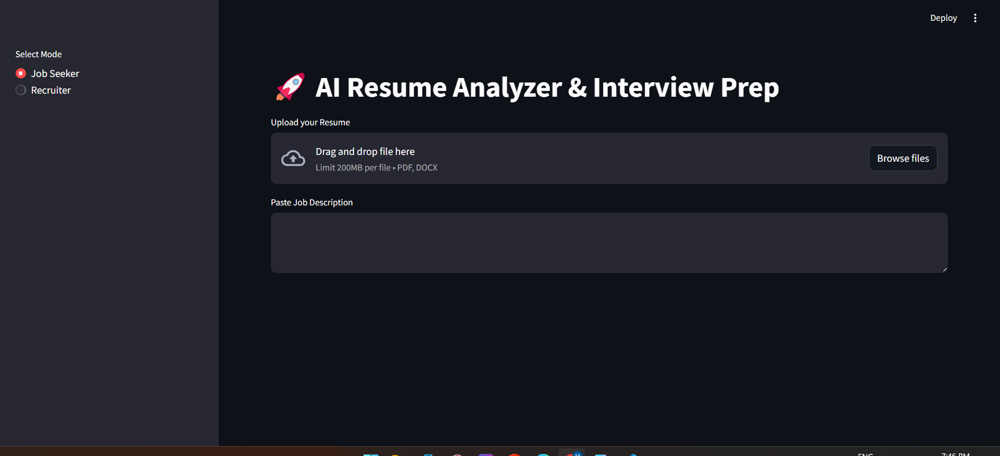
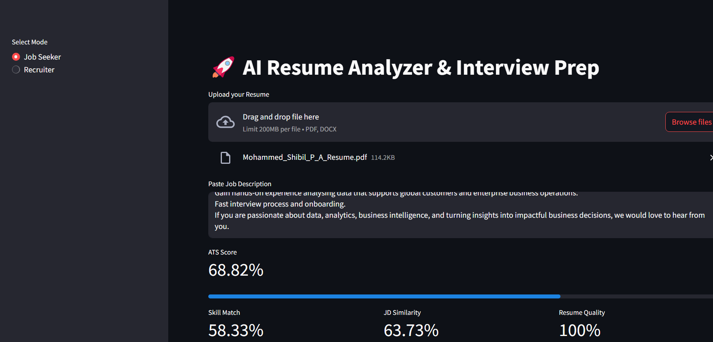
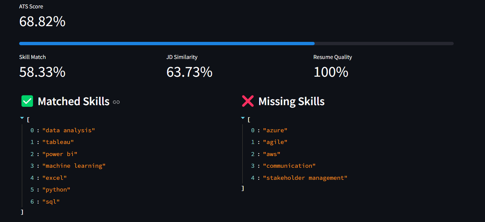
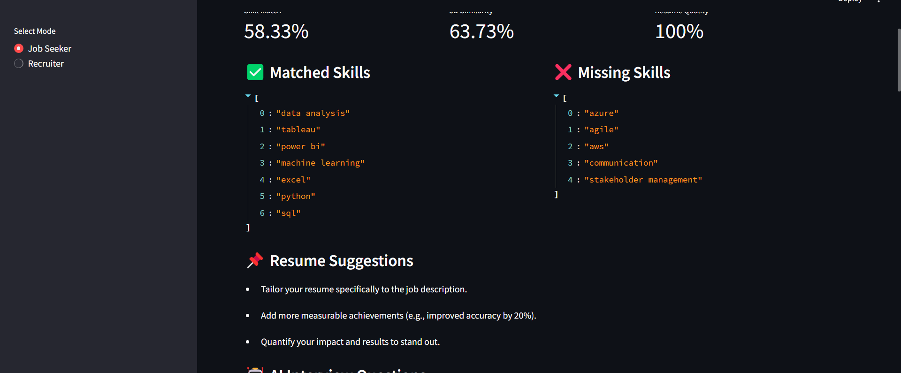
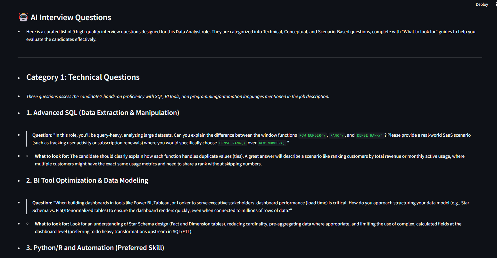
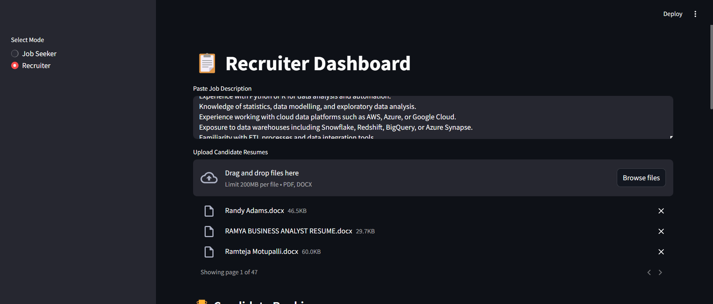
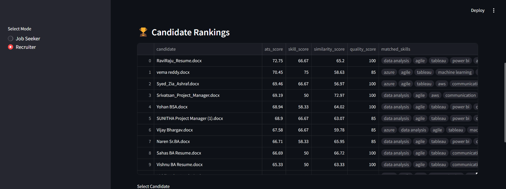
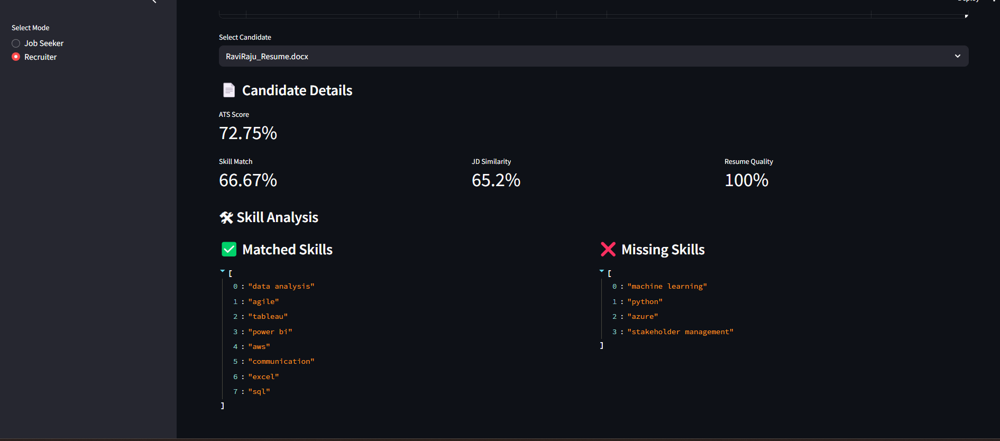

An AI-powered recruitment platform that helps job seekers optimize resumes and enables recruiters to efficiently screen and rank candidates using ATS scoring, skill matching, and AI-generated interview preparation.
The AI Resume Analyzer & Recruitment Platform is an intelligent web application designed to streamline the hiring process for both job seekers and recruiters.

The landing page serves as the entry point of the application. Users can choose between Job Seeker Mode and Recruiter Mode depending on their role before proceeding with resume analysis or candidate screening.
Highlights

Users upload their resume in PDF or DOCX format and paste the target job description. The platform extracts the resume content, analyzes relevant skills, and prepares the data for ATS evaluation.

After processing the uploaded resume, the platform calculates an ATS Compatibility Score together with Skill Match, Job Description Similarity, and Resume Quality metrics to evaluate how well the candidate fits the target role.

The platform compares skills extracted from the resume with the job description to identify matched skills and highlight missing competencies that may affect ATS performance.

Based on the uploaded resume and selected job description, the platform generates technical, conceptual, and scenario-based interview questions to help candidates prepare effectively for interviews.

Recruiters can upload multiple candidate resumes together with a job description. The platform automatically processes each resume and prepares candidates for comparison and ranking.

The platform ranks candidates based on ATS Score, Skill Match, Resume Quality, and Job Description Similarity, enabling recruiters to quickly identify the most suitable applicants.

Recruiters can view detailed analysis for each candidate, including ATS score, matched skills, missing skills, and individual performance metrics to support informed hiring decisions.